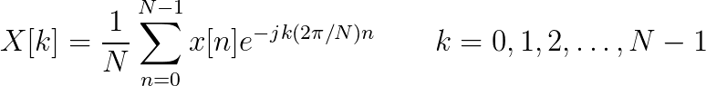

| (12.25) |  |
- Consider the continuous-time signal x(t) = sin(2πf0t). What is the Fourier transform X(ω) of this signal?
- Now consider the discrete-time signal x[n] = sin(Ω0n) What is the Fourier transform X(Ω) of this signal?
 ) button.
) button.
The signal is sampled at a rate of kHz and consists of samples. From these samples, a window of N samples is displayed.
- Does the power spectral density Sxx(ω) corresponding to the frequency f0 match your expectations? Explain.
- Does changing the “zoom” change Sxx(ω)?
- Does changing the phase φ change the Sxx(ω)? Explain.
- If you choose another frequency f1 ≠ f0, does the new power spectral density differ from the original Sxx(ω)? If so, in what ways does it change?
- Are there other frequencies, f1 ≠ f0, for which the power spectral density appears to be a purely shifted version of the original Sxx(ω)?
- Explain why the power spectral density Sxx(ω) for some values of f is a shifted version of the original Sxx(ω) and for some values of f it is not.
1Oppenheim, A. V., A. S. Willsky and S. H. Nawab (1996). Signals and Systems. Upper Saddle River, New Jersey, Prentice-Hall ↵